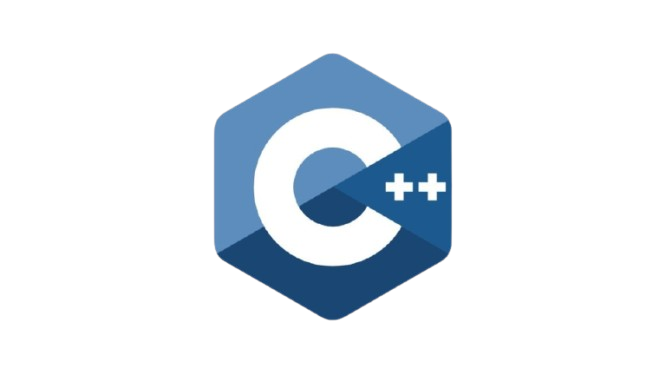
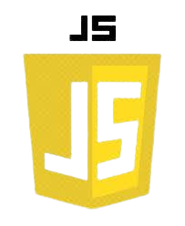
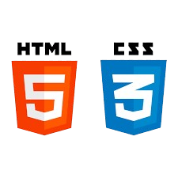

Lógica de Programação
Conceitos essenciais, linguagens, scripts e técnicas usadas para desenvolver programas.
1. O que são Linguagens de Programação?
Linguagens de programação são conjuntos de instruções usadas para criar programas que o computador pode interpretar e executar.
C++
Rápida, poderosa e muito usada em jogos, sistemas embarcados e softwares de alto desempenho.
JavaScript
Linguagem utilizada principalmente no desenvolvimento web, permitindo páginas interativas.
Java
Usada em sistemas empresariais, servidores e desenvolvimento Android.
Python
Simples de aprender e muito utilizada em IA, análise de dados e automação.
PHP
Linguagem usada principalmente no backend de sites e sistemas web.
2. O que é uma linguagem interpretada e compilada?
Interpretada: o código é executado linha por linha (JavaScript, Python).
Compilada: o código é transformado em arquivo executável antes de rodar (C++, Java).
3. O que é HTML e CSS?
HTML: responsável pela estrutura da página. CSS: responsável pelo estilo visual da página.
4. O que é uma IDE?
IDE é um Ambiente de Desenvolvimento Integrado, usado para programar com mais facilidade.
Exemplos: VSCode, IntelliJ, Eclipse, PyCharm.
5. Script para ordenar números de 1 a 20
6. Script BubbleSort para 10 números aleatórios
7. Somar 10 números aleatórios
8. Matriz 3x3 com números aleatórios
9. Cálculo de IMC
10. Conversão de temperatura (°C ↔ °F)
11. Busca Linear
A busca linear percorre todos os elementos do vetor até encontrar o valor procurado.
É simples, porém não é a mais eficiente para listas grandes.